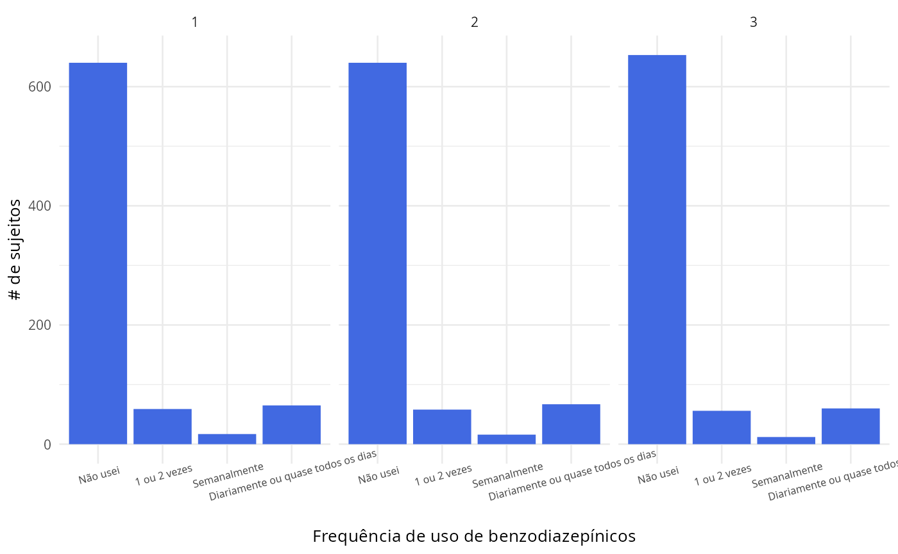

First look
Initially, we are going to load the data from the package to be using for the exploratory data analysis.
data("all_waves", package = "BenzoCovid")First, let’s take a glimpse at the dataset.
dplyr::glimpse(all_waves)
#> Rows: 781
#> Columns: 45
#> $ age <dbl> 47, 34, 57, 52, 32, 44, 29, 57, 33, 29, 49, …
#> $ sex <fct> Female, Female, Female, Female, Male, Female…
#> $ color <fct> Branca, Branca, Branca, Branca, Branca, Bran…
#> $ education <fct> Pós- graduação (incompleta ou completa), Ens…
#> $ state <fct> São Paulo, Rio Grande do Sul, São Paulo, Rio…
#> $ region <fct> Sudeste, Sul, Sudeste, Sul, Centro-Oeste, Su…
#> $ sexual_orientation <fct> Heterossexual, Bissexual, Heterossexual, Het…
#> $ heterosexual <fct> sim, não, sim, sim, sim, sim, não, sim, sim,…
#> $ household_income <fct> D, D, B, A, D, E, D, C, D, B, D, C, B, E, B,…
#> $ contact_covid19 <fct> Não, Não, Não, Não, Não, Não, Não, Não, Não,…
#> $ risk_group_covid19 <fct> Não, Não, Não, Não, Não, Sim, Não, Sim, Não,…
#> $ number_people_house <dbl> 2, 1, 3, 3, 2, 2, 2, 5, 2, 2, 3, 3, 2, 2, 4,…
#> $ benzofreq_w1 <fct> Não usei, Semanalmente, 1 ou 2 vezes, Não us…
#> $ benzofreq_w2 <fct> Não usei, 1 ou 2 vezes, Não usei, Não usei, …
#> $ benzofreq_w3 <fct> Não usei, 1 ou 2 vezes, Não usei, Não usei, …
#> $ family_relationship_w1 <fct> Ruins, Bons, Excelentes, Bons, Regulares, Ex…
#> $ family_relationship_w2 <fct> Regulares, Regulares, Bons, Regulares, Excel…
#> $ family_relationship_w3 <fct> Ruins, Regulares, Bons, Bons, Regulares, Exc…
#> $ friend_relationship_w1 <fct> Bons, Bons, Excelentes, Ruins, Ruins, Excele…
#> $ friend_relationship_w2 <fct> Regulares, Bons, Bons, Ruins, Regulares, Bon…
#> $ friend_relationship_w3 <fct> Regulares, Bons, Regulares, Regulares, Regul…
#> $ loving_relationship_w1 <fct> Regular, Não se aplica, Excelente, Bom, Regu…
#> $ loving_relationship_w2 <fct> Bom, Não se aplica, Bom, Regular, Bom, Ruim,…
#> $ loving_relationship_w3 <fct> Excelente, Não se aplica, Bom, Bom, Regular,…
#> $ social_distancing_w1 <fct> Sim, Sim, Sim, Sim, Sim, Sim, Sim, Sim, Sim,…
#> $ social_distancing_w2 <fct> Sim, Sim, Sim, Sim, Não, Sim, Sim, Sim, Sim,…
#> $ social_distancing_w3 <fct> Não, Sim, Sim, Sim, Não, Sim, Sim, Sim, Sim,…
#> $ family_friends_covid19_w1 <fct> Não, Não, Não, Não, Não, Não, Não, Não, Não,…
#> $ family_friends_covid19_w2 <fct> Não, Não, Não, Não, Não, Não, Sim, Não, Não,…
#> $ family_friends_covid19_w3 <fct> Não, Não, Não, Sim, Não, Sim, Sim, Não, Não,…
#> $ diagnostic_covid19_w1 <fct> Não, Não, Não, Não, Não, Não, Não, Não, Não,…
#> $ diagnostic_covid19_w2 <fct> Não, Não, Não, Não, Não, Não, Não, Não, Não,…
#> $ diagnostic_covid19_w3 <fct> Não, Não, Não, Não, Não, Não, Não, Não, Não,…
#> $ sleep_quality_w1 <fct> Bom, Ruim, Bom, Regular, Ruim, Excelente, Re…
#> $ sleep_quality_w2 <fct> Regular, Bom, Regular, Regular, Regular, Exc…
#> $ sleep_quality_w3 <fct> Bom, Ruim, Regular, Regular, Regular, Excele…
#> $ suicidal_ideation_w1 <fct> No, Yes, No, Yes, No, No, No, No, Yes, No, N…
#> $ suicidal_ideation_w2 <fct> No, Yes, No, Yes, No, No, No, Yes, No, No, N…
#> $ suicidal_ideation_w3 <fct> Não, Sim, Não, Sim, Não, Não, Não, Sim, Sim,…
#> $ phq_total_w1 <dbl> 21, 15, 8, 26, 10, 11, 20, 17, 9, 15, 2, 4, …
#> $ phq_total_w2 <dbl> 22, 17, 13, 24, 7, 11, 18, 20, 4, 13, 1, 8, …
#> $ phq_total_w3 <dbl> 7, 22, 8, 27, 1, 10, 18, 20, 12, 11, 3, 6, 1…
#> $ gad_total_w1 <dbl> 12, 12, 12, 17, 7, 14, 18, 17, 18, 11, 3, 0,…
#> $ gad_total_w2 <dbl> 5, 11, 15, 21, 6, 21, 20, 15, 13, 15, 5, 5, …
#> $ gad_total_w3 <dbl> 1, 16, 21, 20, 4, 16, 18, 15, 19, 9, 2, 6, 1…
all_waves |>
purrr::map_dbl(\(x) sum(is.na(x)))
#> age sex color
#> 0 0 0
#> education state region
#> 0 0 0
#> sexual_orientation heterosexual household_income
#> 0 0 0
#> contact_covid19 risk_group_covid19 number_people_house
#> 0 0 0
#> benzofreq_w1 benzofreq_w2 benzofreq_w3
#> 0 0 0
#> family_relationship_w1 family_relationship_w2 family_relationship_w3
#> 0 0 0
#> friend_relationship_w1 friend_relationship_w2 friend_relationship_w3
#> 0 0 0
#> loving_relationship_w1 loving_relationship_w2 loving_relationship_w3
#> 0 0 0
#> social_distancing_w1 social_distancing_w2 social_distancing_w3
#> 0 0 0
#> family_friends_covid19_w1 family_friends_covid19_w2 family_friends_covid19_w3
#> 0 0 0
#> diagnostic_covid19_w1 diagnostic_covid19_w2 diagnostic_covid19_w3
#> 0 0 0
#> sleep_quality_w1 sleep_quality_w2 sleep_quality_w3
#> 0 0 0
#> suicidal_ideation_w1 suicidal_ideation_w2 suicidal_ideation_w3
#> 0 0 0
#> phq_total_w1 phq_total_w2 phq_total_w3
#> 0 0 0
#> gad_total_w1 gad_total_w2 gad_total_w3
#> 0 0 0As we can see in the output above, we don’t have any variable with missing values. That’s nice!
Anxiety and depression levels by wave
Now let’s create some plots to see the trajectories of the anxiety and depression measures in the sample.
all_waves |>
BenzoCovid::plot_three_waves("phq_total") +
ggplot2::labs(x = "Study wave", y = "PHQ-9 total score mean")
all_waves |>
BenzoCovid::plot_three_waves("gad_total") +
ggplot2::labs(x = "Study wave", y = "GAD-7 total score mean")Apparently, we were able to see a decline in both measures, which indicates that people were showing remission of symptoms over time.
Benzodiazepine use frequency between waves
This figure is in brazilian portuguese because of the original labels.
all_waves |>
BenzoCovid::plot_three_waves("benzofreq") +
ggplot2::labs(x = "Frequência de uso de benzodiazepínicos", y = "# de sujeitos") +
ggplot2::theme(axis.text.x = ggplot2::element_text(angle = 15, size = 6))
The frequency pattern looks more or less stable as the time passes.